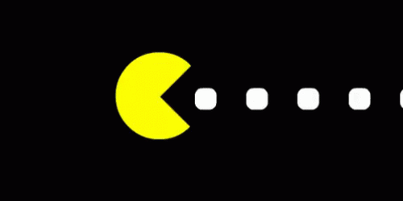
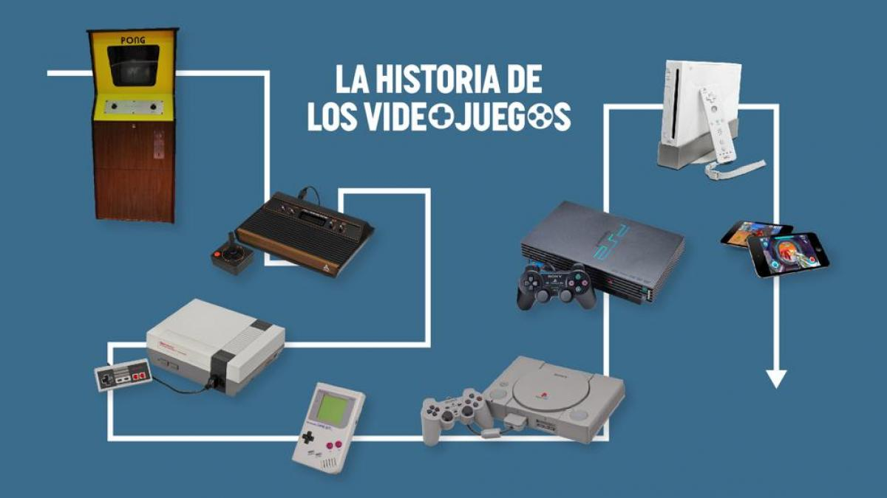

es un popular videojuego de construcción y aventura desarrollado por Mojang Studios. Fue lanzado en 2011 y se ha convertido en uno de los juegos más vendidos de todos los tiempos. Minecraft ha sido elogiado por su libertad de juego, su enfoque en la creatividad y su comunidad activa de jugadores y creadores de contenido.
GAMESX es mi página personal dedicada a los videojuegos. Todo empezó gracias a mi hermano y desde ese momento no he parado. Los videojuegos han sido una parte fundamental de mi vida, llenándola de momentos increíbles y siendo un refugio en los momentos difíciles. Mi sueño es programar un juego, y con esta página, espero dar el primer paso hacia ese objetivo.
Los videojuegos surgieron en los años 50 y 60, se popularizaron en los 70 y 80 con consolas y arcades, crecieron en los 90 con juegos en 3D y consolas domésticas, avanzaron en los 2000 con gráficos realistas y juegos en línea, en la década de 2010, hubo avances en juegos para dispositivos móviles, el auge de los juegos independientes y el crecimiento de la realidad virtual, actualmente son una forma masiva de entretenimiento.
